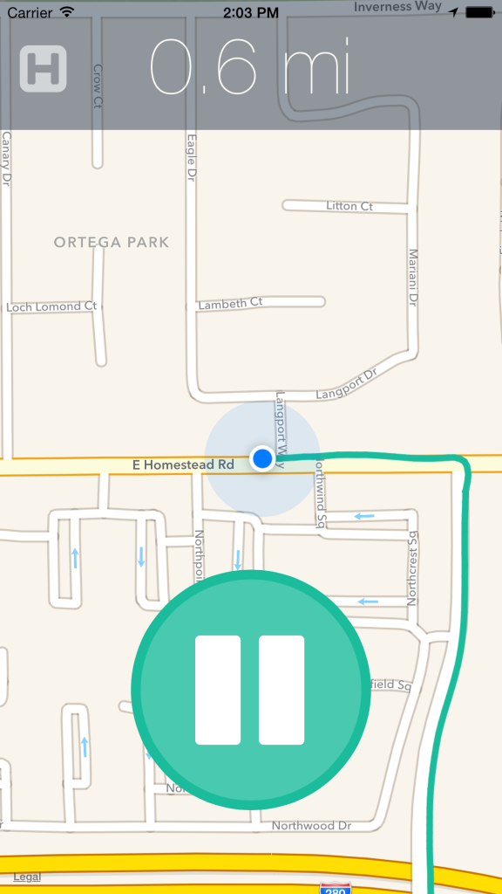
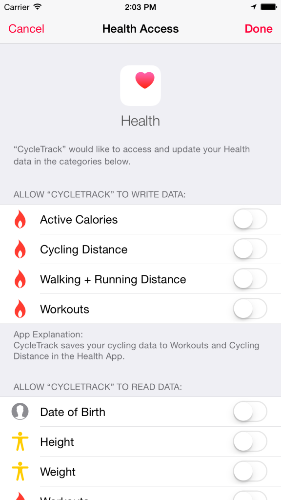
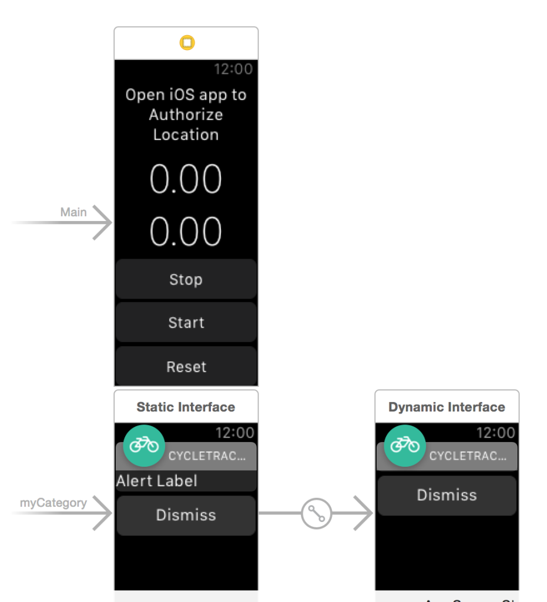

Cycle, an iOS8 Watch App plus Apple WatchKit Development Tips
This past week Apple started shipments of the new Apple Watch, with some analysts suggesting we just witnessed the creation of an overnight billion-dollar business. I have a strong feeling there will be an explosion of new apps designed for the watch given how easy Apple has made it to create new apps for the watch, as well as extend your existing iOS app to have a custom WatchKit extension.
I've started to rebuild the Spokefly hybrid app in Apple's new programming language, Swift. I thought this would be a good way to work out some of the kinks and build something cool for the Apple Watch. Cycle by Spokefly is an iOS and Apple Watch app that tracks your cycling distance, displays the speed and distance data on your watch in realtime, all while recording your route. There were a few requirements going into this build that I set:
Cycle Requirements
- Has to be a single view and simple (this is not Strava, people)
- Has to track your route and total distance (and in the background!)
- Has to sync Cycling with the Apple Health App using HealthKit
- Has to save location data to a server somewhere for future analysis
- Has to use the new Universal Layout in Storyboard for universal app support (great Autolayout practice, really)
- Has to be submittable to the App Store in a weekend of work
These are a pretty simple set of requirements. I chose to build an application with a single view because I wanted to design an app "Watch first" so it would conform nicely to the Apple Watch without a lot of custom UI elements that I'd need to re-create or remove because of the size constraints of the Watch UI. Syncing with HealthKit was high up on the requirements because of a pet peeve I have – Apple's native Health App has a cycling distance and cycling workouts section available, but the data doesn't auto-populate like it does for step counting – it doesn't work at all. The app has to track your route and total distance, as well as save the location data to a server somewhere, all in all a pretty intuitive set of features for a route tracking app. My time goal? I didn't meet it, the app wasn't as polished as I'd like in the first weekend so I spent a second weekend making it a little prettier and doing some extra watch debugging.
Rails Server Setup
Many iOS developers use Parse for their app's backend, or utilizing an internal mobile database like iOS' CoreData or Realm. I've wanted to try the Rails-api gem for a while so I created a simple rails app where I aggregate all of the location data after each User's ride. I'm not storing anything locally in the app, when you save data using HealthKit you can also read it later.
In the new rails app, I created a Location and Ride model to capture the user's location and create a "ride" so I could query that data later. The idea is to use this data to plot where cyclists are riding in a given city rather than the broken data cities currently have around cycling transportation. It's hosted on Heroku for free, and as of writing this already had about 80,000 rows just from testing, so I'm thinking it will need some optimization later....but that's not the point of this post!
iOS and Apple Watch apps
These are the highlights of what I learned building the watch, with some key observations for those jumping into the Watch App development game. For the most part, any iOS developer will easily be able to build a Watch app. Functionally it's the same as developing your iOS app in Xcode with new terminology, e.g. WKInterfaceLabel vs UILabel.
I only targeted iOS 8.2 and up, so older iPhones that don't support iOS8 will not be able to run this app, which is not an option for every developer.
Setup
First thing to notice is the iOS companion app are two completely separate apps, so your project will have three total folders: YourAppName, YourAppNameWatchKitExtension, and YourAppName WatchKit App. Getting these to play nicely together requires some configuration as well as creation of an app group to be shared between the apps to allow data sharing and communication. Apple's WatchKit tips provides us a great place to start.
In short, you create an app group bundle identifier to be shared between the iOS app and Watch App through the developer portal. When you submit to the App Store, the group identifier and all of the versions in the Plist files must match for the app to bundle and be installed correctly on the end User's device. To make sure app groups is enabled, go to each of your Build Targets, and click AppName WatchKit Extension or AppName. Under Capabilities, you'll turn App Groups to 'on'. Enter the App Group ID that you created, mine is in the standard "com.AppGroup.AppName". Repeat this for each of the two app targets.
MapKit and CoreLocation
I decided to start by making the iOS app function first, and then sending that data to the watch as it's updated on the phone in realtime. From what I understood when I started building the Watch App is that most of the heavy lifting should be done by the parent iOS application, so it seemed natural to delay any Watch implementations until the iOS app was working. What I know now is that you can call MapKit's CoreLocation in your watch app extension almost the same way as you would in your iPhone app. This wouldn't have changed anything for my implementation but I would take this into consideration when architecting your app. The hangup is that the user can't currently authorize your app to have access to their location from the app, but only from the iPhone app. Hopefully this is something Apple changes.
Okay, so now to our first feature, we need to get the User's current location and plot that in the map. After dropping in the MapView in Interface Builder and connecting it from the Storyboard to the controller via control + click, we now have mapView to set up, place the user's location, as well as track their location when it updates.
import MapKit
// Connect the map to the controller from storyboard
@IBOutlet weak var mapView: MKMapView!
// Setup our Map View
mapView.delegate = self
mapView.showsUserLocation = true
We'll also need to set up our CoreLocation to track the User's location, which requires an instance of the CLLocationManager.
import CoreLocation
var manager: CLLocationManager!
//Setup our Location Manager
manager = CLLocationManager()
manager.delegate = self
// set to fitness to pause GPS when not moving
manager.activityType = .Fitness
// set accuracy to best (could be a battery drain)
manager.desiredAccuracy = kCLLocationAccuracyBest
// be sure to request always authorization
// this allows you to have background location tracking
manager.requestAlwaysAuthorization()
// then, once we are ready to start tracking
manager.startUpdatingLocation()
Background Location Monitoring
When we set manager.requestAlwaysAuthorization() we need to make sure we have backgrounding enabled for the app. Do this by going back into your app settings > Capabilities > Background Modes. You'll want to check the box that says 'Location Updates'. Backgrounding is only allowed for certain types of functions, luckily background location tracking is one of them.
I won't put the whole implementation of the route tracking here, but needless to say, it works by collecting the locations in an array myLocations, and with each didUpdateLocations, a new location object from the location manager is added to the array. These series of locations are what is plotted on the map, and the entire array of locations for each 'ride' is the data that is submitted to the server.
func locationManager(manager:CLLocationManager, didUpdateLocations locations:[AnyObject]) {
// do the route stuff here
// We also update the totalDistance label and the speed label that display in the top of the iOS app
// this is also where we call the update to the watch, more in a minute
}
HealthKit and Health App Sync
Next, I needed to get Apple's HealthKit and the new Cycle app syncing nicely. After a little research I found a simple tutorial for creating and saving workouts to the Health App to use as our starting point. To use HealthKit you need to set the HealthKit entitlement, so go back to Capabilities and turn on HealthKit for both your iOS and companion WatchKit app. If you aren't familiar with the Health App, developers use the HealthKit api to read and write health related data to the new Health App that iPhone users started to see on their home screen starting with iOS8. The best example of this is the Step Counter that tracks your daily steps and charts it over time.
The tutorial linked covers everything you need, I ended up with two methods: saveCyclingWorkout and saveCyclingDistance that take data from your locations and save it to HealthKit. The only surprise with HealthKit authorization was in the UI. Once the User has approved (or partially approved) Health App syncing, there's no way for them to go back from your app and change those same settings. They have to go into the actual Health App, find YourAppName and configure it there.
To let the user turn on Health App syncing in my app, I placed a simple Font-Awesome icon (yes, someone ported it to Swift). When HealthKit is not authorized, the user can tap the H and it will open the Health Authorization UIView:
Then, once the User has authorized HealthKit, we set the button interaction to a green color and disable interaction, since the user can no longer do anything with the Health App from our app.
// this uses an extension for UIColor that enables HEX input, not default behavior
// setTitleColor because it's a UIButton
healthAppButton.setTitleColor(UIColor(rgba: "#1abc9c"))
// set userInteraction to false
healthAppButton.userInteractionEnabled = false
Saving Location Data to third-party API
Okay! So we have the location data, we're recording it, plotting it on the map, and we save it to HealthKit after the User authorizes our access. Next up, saving the data to the server. I created a simple Location struct to make it easier to organize the location manager data, especially because I needed to clean it up to send to the server in something it could understand (read: not CLLocationManager objects).
Rather than constantly updating the server with location data, I would rather collect it all and save it to the server at once, off of the main thread, so the user can start another ride or do something else without us interrupting them. So we start out with our array of locations, which is really an array of CLLocation objects, and iterate through them to send to the rails server:
var api = ApiManager()
func postLocationData() {
// loop through the locations
for location in myLocations {
// Create a current location
let currentLocation = Location(location: location)
// create the dictionary for each location and append to locationArray
var l = ["location": ["lat":"\(currentLocation.lat)",
"lng":"\(currentLocation.lng)",
"speed":"\(currentLocation.speed)",
"course":"\(currentLocation.course)",
"date":"\(currentLocation.date)",
"rider":"\(currentLocation.rider)",
"totalDistance": "\(traveledDistance)"
]
]
// Append to the location array
locationArray.append(l)
}
// Post the location array to the server (this is a batch insert, should be super fast)
var url: String = "https://myserver.com/save_locations"
// Post the data to the server
// This is a background job, so set the Quality of Service appropriately
let qualityOfServiceClass = QOS_CLASS_BACKGROUND
// Get the Background Queue
let backgroundQueue = dispatch_get_global_queue(qualityOfServiceClass, 0)
// Dispatch the post request to the background queue
dispatch_async(backgroundQueue, {
self.api.post(self.locationArray, url: url) { (succeeded: Bool, msg: String) -> () in
// send the location array to the post method
// no callback success or fail because the user doesn't need to know and we don't really care
}
dispatch_async(dispatch_get_main_queue(), { () -> Void in
// use this if we want to update some UI stuff after
})
})
// clear out the array of locations so the user can start another ride
locationArray.removeAll()
}
There's a number of things going on here that are not "the right way" so I'd recommend against copy/paste. What to see here is that I'm doing a batch insert into the rails api, so it's only one networking call, and we don't care if it succeeds or fails because we're really just collecting aggregate data. This is the Ruby method that takes our big array of location data and saves them all at once.
# Open up an ActiveRecord::Transaction
# Save each of the Location objects at once
Location.transaction do
locations_array.each(&:save!)
end
WatchKit and Watch App Development
And now we're finally ready for the Watch! We have our location tracking, our data saving to HealthKit and the server, and the UI looks how we want. But how does the parent app get the location and distance data to the watch?
After we follow Apple's instructions for Adding a WatchKit App to Your iOS Project, we're ready to lay out the storyboard. You can see that when we create the watch app we have a few new folders to contend with. The YourAppWatchKitExtension folder has your two controllers, and the YourApp WatchKit App has your new Interface.storyboard file for the app.
Watch App Storyboard Layout
Essentially we re-created all of the buttons and labels that I had in my iOS app's UI: Start, Stop, Reset, traveledDistance label, speed label, and a new authorizeLocation label. The authorizeLocation label goes back to our earlier point that a User can't enable location tracking from the Apple Watch, it has to be done from the iOS device. When we don't have authorization, we're going to show only this label until the User authorizes us to use their location. This could also be presented in a modal or other view, but toggling the labels seemed to be the simplest for our purposes.
Syncing Live Data with Apple Watch
Okay...so we have the UI, how do we get live data to it? Well it turns out natively, you really can't without writing a lot of code using the notification center (yet). I want the watch app to reflect the current traveledDistance and speed, not occasionally update it in the background, that wouldn't be a super useful cycling tracker app. These are the two most important factors to get live data displaying in the app.
1. openParentApplication:reply can start your parent app in the background to enable things like background location tracking or short networking calls. Read the developer documentation.
In our WatchKit InterfaceController, we call openParentApplication:reply if the user has authorized location and they are starting the app from the Watch.
override func willActivate() {
// This method is called when watch view controller is about to be visible to user
super.willActivate()
// Check for authorization
let status = CLLocationManager.authorizationStatus()
if(status == CLAuthorizationStatus.NotDetermined) {
// Not authorized
// Hide the buttons
startButton.setHidden(true)
stopButton.setHidden(true)
resetButton.setHidden(true)
traveledDistance.setHidden(true)
currentSpeed.setHidden(true)
}
else {
// Authorized, hide the authorization message
authorizeLocation.setHidden(true)
// Send the refreshData request to the parent app
// Make sure to set your reply block in the parent iOS app
WKInterfaceController.openParentApplication(["request": "refreshData"],
reply: { (replyInfo, error) -> Void in
NSLog("Reply: \(replyInfo)")
})
}
}
2. MMWormhole (built on top of Darwin Notification Center) is a great library for enabling live updates on the watch.
The creator of MMWormhole puts it best:
One of the areas where we are finding MMWormhole to be so valuable is passing information to the extension that is used to setup the UI on the watch. That includes things like the title or date of a label, or the contents of table cells. If the wormhole represents a set of mailboxes, the messages passed to mailboxes on the extension are a great way to tell the watch app what it's UI state should be whether the watch app is awake or not. It can check the contents of those mailboxes when it wakes up and setup it's UI accordingly. This is a case that can be handled all sorts of ways, including NSUserDefaults or Core Data persistent store sharing, but I think this method of passed JSON or NSCoded messages is a simple and elegant solution.
This is exactly what we need! MMWormhole creates a simple system where we can set data to NSUserDefaults and let the watch know it's been updated using...a wormhole :) You'll need to create a bridging header to use this in Swift, but it's straightforward with CocoaPods and Apple's guidance on using both Objective-C and Swift in the same project.
// stabilize a wormhole and set passMessageObject
let wormhole = MMWormhole(applicationGroupIdentifier: "group.yourApp.AppName", optionalDirectory: "yourDictionary")
// update speed label (in iOS app)
self.wormhole.passMessageObject("watchUpdate", identifier: "speedUpdateToWatch")
// Listener (in Watch App)
wormhole.listenForMessageWithIdentifier("speedUpdateToWatch", listener: { (_) -> Void in
self.updateSpeedLabel()
})
So what you can see here is a sort example of the Watch app listening for an update from the iOS app, at which point it reads some data from NSUserDefaults (like localStorage for iOS) and updates the Watch UI once it has new data. This is just repeated for all of the events we're listening for.
To start the iOS app in the background, we first check if the User has already authorized us to get their location. If they have, we start the app in the background with openParentApplication:reply, then tell the iOS app to start tracking the user in the background using MMWormhole. openParentApplication:reply is a fairly new method for the Watch in response to developers needing a way to open the parent application and there are reports of it not always working as expected on the Apple Developer forums, so be sure to test that it's working on a real device.
That's really it! Cycle, a simple cycling tracker that works on both the iPhone and the new Apple Watch. Download it and let me know what you think!
Download the App
Try out Cycle on the App Store